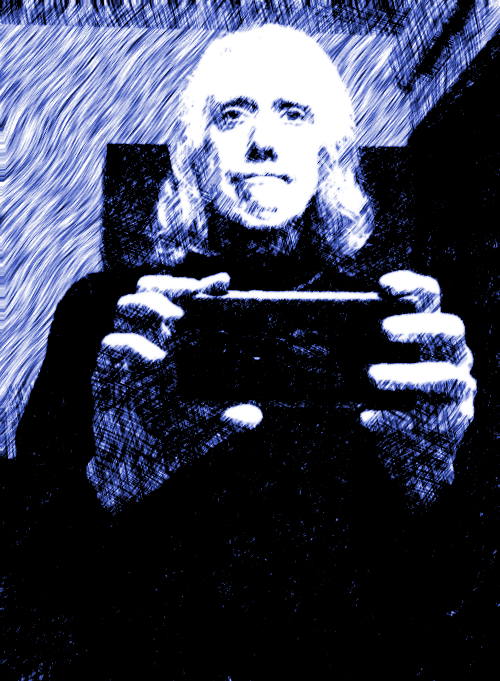

Correspondence
WUTHERING.UK
P.O. Box 1302
Grand Marais, MN, 55604
USA
 January, 2024
January, 2024
An inaugural explainer of the Dark Muse
 All at sea
All at sea
Introduction
The purpose of this media effort will be to convey some of my thoughts1
Here I am:

and impressions about things dark, or what I call the Dark
Muse2
muse: originally any of the nine sister goddesses in Greek
mythology presiding over music, literature, and arts, or a
state of deep thought or abstraction, or a source of
inspiration
. Yes, this would include what is today known as goth and
the gothic, but I hope to go much deeper. Can you relate? Does a
cloudy day or stormy night appeal? Do you feel spoken to by things
dark? Do you wish every night were Halloween? Do you find dreamy what
they find dreary? Let’s start with a litmus test of sorts from my main
darkness benefactress, the poet who is at the centre of everything I
mean to say about dark, Emily Brontë 3
Oddly enough, I’ve never read her Wuthering Heights and do
not intend to. However, her poetry I read continually, gleaning new
insights each time. See here for a quick biography.

Fall, leaves, fall; die, flowers, away;
Lengthen night and shorten day;
Every leaf speaks bliss to me
Fluttering from the autumn tree.
I shall smile when wreaths of snow
Blossom where the rose should grow;
I shall sing when night’s decay
Ushers in a drearier day.
Either you get it or you don’t. Either it speaks to you, or you find it … weird, morbid, overwrought, puerile, even sick or evil. Yes, many people call a fascination with dark things mentally ill, an obsession with unhealthy things, some droopy, woebegone attention-seeking act — indicative of depression, a fixation on morosity, morbidity, puerile schadenfreude, if not evil. This is certainly not my take on dark, rather, I see dark from a purely aesthetic perspective. To be sure, my ruminations on the Dark Muse are informed by key poets from the mainly early nineteenth century. And they have told me dark goes to the core of life.
Let’s try another. Here is Longfellow’s Snow-flakes
Out of the bosom of the Air,
Out of the cloud-folds of her garments shaken,
Over the woodlands brown and bare,
Over the harvest-fields forsaken,
Silent, and soft, and slow
Descends the snow.
Even as our cloudy fancies take
Suddenly shape in some divine expression,
Even as the troubled heart doth make
In the white countenance confession,
The troubled sky reveals
The grief it feels.
This is the poem of the air,
Slowly in silent syllables recorded;
This is the secret of despair,
Long in its cloudy bosom hoarded,
Now whispered and revealed
To wood and field.
And so he processes agents of depression4 …which are not mentioned, rather, to be assumed by readers familiar with these agents in their own lives. — despair, grief, misery — into more equanimous sadness and melancholy by reaching out into the natural world and poetising. This is the modus operandi of the nineteenth-century poet. It was as if they understood sadness and melancholy to be a sort of cancer or virus that may eventually go into remission, but will never be entirely gone. I contend we have lost the ability to process depression into a stasis melancholy, i.e., to find a modus vivendi5 modus vivendi: An arrangement or agreement allowing conflicting parties to coexist peacefully, either indefinitely or until a final settlement is reached, or (literally) a way of living. with the trials and tribulations of life. Instead, the modern human is lost in a house of mirrors, in an echo chamber of illusions fuelled by fantastical unreasonable expectations, thus, unable, unwilling to face life’s harsher side.
Here is another great example of “you get the Dark Muse or you don’t,”
this time from Emily Dickinson’s 6
See here for a quick biography

There’s a certain slant of
light
There’s a certain Slant of light,
Winter Afternoons —
That oppresses, like the Heft
Of Cathedral Tunes —
Heavenly Hurt, it gives us —
We can find no scar,
But internal difference —
Where the Meanings, are —
None may teach it – Any —
’Tis the seal Despair —
An imperial affliction
Sent us of the Air —
When it comes, the Landscape listens —
Shadows – hold their breath —
When it goes, ’tis like the Distance
On the look of Death —
That last line includes Death, capitalised7 Dickinson often employed the German practice of capitalising nouns for poetic emphasis. . It is my contention that these nineteenth-century creators had a completely different insight to and understanding of death than we do today. And since this capitalised, other-century view of Death has become so opaque, let us talk a bit about what they really meant and what they really felt about it.
Nature and Death in the 19th century
➝ No “degrees” of nature, rather, nature ubiquitous
➝ Nature not a place, rather, nature universal
➝ The increasingly extra-natural human
It is my contention that we today understand nature much differently than did early-nineteenth-century poets such as the Haworth and Amherst Emilies 8 My shorthand for Emily Brontë and Emily Dickinson are based on their towns of origin — Haworth, West Yorkshire, for the former and Amherst, Massachusetts, for the latter. and their contemporaries. And as such we understand death much differently.
If we just consider shelter and dwelling spaces, a modern building is more like a sealed spaceship landed on a hostile alien planet compared to the simpler, more primitive indoor environments of the not-so-distant past. Literally, the Brontës’ Haworth parsonage, built between 1778 and 1779, had more in common with human shelters from thousands of years previous than with a modern suburban house only some two hundred years later. In just these two to three hundred years a very steep gradient has grown between indoors and outdoors. And this, in turn, has brought us to see nature more as a place outside of our artificial, high-tech, controlled and regulated modern buildings. Which, in turn, leads to us to rate the outdoors on continua of relative wildness, as well as remoteness from our self-contained indoor environments.
No doubt humans have always made some sort of distinction between being inside and outside a shelter, even before we stopped being nomadic/semi-nomadic circa six thousand years ago to found permanent settlement civilization. But once we switched to city-states humans have done more and more of their living in the Great Indoors. And these indoor environments have become increasingly androcentric, self-contained, self-referencing, physically removed from the natural world. In the West, architecture arguably reached a fantastical aesthetic crescendo in the Victorian nineteenth century9 …with dark, heavy, dramatic Neo-Gothic as a style. , coinciding exponential urban population growth. We became much more “indoorsy” than even a century or so before — if not simply because a much higher percentage of us had become urbanites. And so the steepness and suddenness of our modern indoor-versus-outdoor gradient has increased dramatically since Western Victorian times, leading to this penultimate extra-natural state in which humanity now finds itself. Of course it is difficult to objectively assess our separation from nature. We may accept separation from, domination of nature as fate, as destiny, and yet we are weirdly cognizant of the estrangement.
Is not nature that uncontrolled, unmanaged, uncultivated, unregulated, unchecked, unruly wildness outside? And were we not right to progress to a higher, separate physical space of our own unique design? What if we look at nature as less a place inside or outside, rather, as everything going on everywhere. I say nature was once the myriad cycles of birth, growth, deterioration, and death going on everywhere free of any indoors-outdoors boundary. I contend the Brontës at least sensed this pre-modern meaning of universal nature as a location outside of inside. Here again is Emily Brontë, her The night is darkening round me
The night is darkening round me,
The wild winds coldly blow;
But a tyrant spell has bound me,
And I cannot, cannot go.
The giant trees are bending
Their bare boughs weighed with snow;
The storm is fast descending,
And yet I cannot go.
Clouds beyond clouds above me,
Wastes beyond wastes below;
But nothing drear can move me;
I will not, cannot go.
She even refers to the wilds as “wastes,” as drear, and yet she is transfixed, frozen to the spot, and she cannot, cannot go. Wastes and drear refer to the age-old attitude of nature as the enemy, something to get away from, certainly not to poetise. But certain Romantic Era poets did just that, sublimely. They stopped, turned around, and stared into something that had previously been terrible unforgiving, and they found sublimity10 More on Edmund Burke’s (as well as Bertrand Russell’s) false, “don’t get it” tedium on sublimity later. In short, sublime is what we may find beyond mere beauty, touching what Dostoevsky is saying here: There are seconds, they only come five or six at a time, and you suddenly feel the presence of eternal harmony, fully achieved. It is nothing earthly; not that it is heavenly, but man cannot endure it in his earthly state. One must change physically or die. The feeling is clear and indisputable. As if you suddenly sense the whole of nature and suddenly say: yes, this is true. This is not tenderheartedness, but simply joy. .
With nature as cycles of birth, growth, deterioration, and death, the last component, death must be seen beyond our mechanistic modern take as just terminal, physical malfunction11 …as when a car is written off as “totalled.” . Instead, death becomes Death, a quasi-spiritual force majeure. Death from old age, an accident, or as the result of physical aggression or predation12 For critters, predators are other critters. For humans, predators are—outside of war and criminal activity—all but exclusively bacteria and viruses. . But when death is an undeniable certainty, inevitable, and, especially, able to strike at any time, then a completely different attitude dominates compared to our modern experience of death as a negative outcome after modern health care’s labyrinth of diagnoses and repair attempts. Yes, of course, life in our modern times can be precarious. But not half as precarious as in the early nineteenth century. Death still may arrive suddenly from an accident or violence. But today death seems much more cordoned off, under much more control than ever. As if we have nominal veto power over it.
The days of our years are threescore years and ten; and if by reason of strength they be fourscore years, yet is their strength labour and sorrow; for it is soon cut off, and we fly away.
— Psalm 90:10
This is surely the old-fashioned take on death and its absolute finalism, its resounding inevitability. Life is starkly contrasted by death inescapable. Death is life’s backstop against which any ball thrown bounces back. Death is the walls of life’s playpen or sandbox.
As opposed to the creeping attitude that death may be postponed, even cheated. Psalm 90:10 by no means guarantees seventy years of life and yet we have grown to expect some seventy, eighty, ninety, even longer, as something due us by the modern world.
Let me relate a modern story to our new attitude towards death. My father, who has since passed away, lost his third wife to lung cancer caused inevitably by decades of smoking13 Ironically, both of his previous wives had likewise died from smoking-related illnesses. . But instead of accepting this, he became angry and accused her doctors of malpractice, threatening lawsuits. Nothing came of this, but I wondered why such an irrational outburst? I finally theorised that he had taken in all the explanations of all the various medical interventions — including their probabilities of success or failure — and built up hope that the death sentence of lung cancer could, should be beaten by some technology in some corner of the modern medical labyrinth.
Back in the day, no one would have second-guessed death’s arrival to such an absurd degree. Today, however, the fourscore years spoken of in Psalms almost seem like a guarantee of modern medicine — even to the extent that old age and death are “diseases” medical science can and should be defeated. Hence, we feel cheated, as my father did, when that three-, fourscore and more is not forthcoming. What is obviously missing is a humility towards death.
Thriving versus surviving; top dog versus underdog
In his book The Genius of Instinct 14 The Genius of Instinct; Reclaim Mother Nature’s Tools for Enhancing Your Health, Happiness, Family, and Work by Hendrie Weisinger; 2009; Pearson Education, Inc. the acclaimed author and psychologist Hendrie Weisinger insists we are hard-wired by nature to seek out the best conditions for thriving, that any life other than one of maximised thriving is a waste. He uses the example of bats, which according to research, seem to seek out human buildings, preferring them over natural homes such as rock outcrops, hollow trees, or caves. And in so doing this they enjoy advantages such as better body temperature regulation, better infant mortality statistics, less threat of predation. This may be true, but aren’t these bats now outside of the original constraints where they once were completely integrated with nature? They are now in a state of trans-bat-ism, but is that a good thing? Perhaps with bats this is not too much of an imbalance vis-a-vis the rest of their surrounding environment. However, what happens when a species continues to expand its thriving, increasing its success statistics, evermore stepping over, past any of the natural restrictions that real integration and harmony with nature would have required? Yes, and aren’t we humans Exhibit A of just such an out-of-control species? And so I ask, how can this be good, end well? How can a dominant species like ours always expand our thriving, always “gaming the system” not eventually have to pay some price? Simply put, How can more and more people consuming more and more resources and energy not result in an eventual disaster? It seem nature has two games: A) niche/stasis and B) exponential growth. And anytime we’re not in a niche, in stasis, just marking our spot, we’re on the exponential growth curve — which will eventually hit its inflexion point and take off dramatically and uncontrollably towards an inevitable crash.
And so I ask, Was Emily Brontë not such a hard-pressed little bat out in the wilds, colony-less, huddled in a hollow tree, barely eking out a marginal life? Here’s her Plead for me
Why I have persevered to shun
The common paths that others run;
And on a strange road journeyed on
Heedless alike of Wealth and Power—–
Of Glory’s wreath and Pleasure’s flower.
These once indeed seemed Beings divine,
And they perchance heard vows of mine
And saw my offerings on their shrine—–
But, careless gifts are seldom prized,
And mine were worthily despised;
My Darling Pain that wounds and sears
And wrings a blessing out from tears
By deadening me to real cares;
And yet, a king—–though prudence well
Have taught thy subject to rebel.
And am I wrong to worship where
Faith cannot doubt nor Hope despair,
Since my own soul can grant my prayer?
Speak, God of Visions, plead for me
And tell why I have chosen thee!
This is her ode to skipping the trans-bat scene of her day. I can’t help but believe she was driven. In my mind’s eye I can only see her as driven across the semi-wilderness moorland, nothing less than a wretch of a human. Emily Jane Brontë died of anorexia/malnutrition, contaminated water, tuberculosis — pick one, two, or all three — five months after her thirtieth birthday. She only saw the greater world outside of tiny Haworth village for a few months, and that greater world had nothing modern, e.g., a cut on a toe could lead to an infect requiring amputation or even worse.
But then one might ask if her existence in the early nineteen century were so very wild and rugged. If we live in a modern world completely indoors, floating in materialism, i.e., one hundred times the resources and energy per capita as one of our ancestors from 1800, was she truly a wild creature of nature? When we think of how the Romantic Era poets perceived and reported nature, we think of picnics like from the film Emma on grassy slopes where dandies and their pampered ladies are attended by servants
 Emma picnic in the harrowing wilds of England
Emma picnic in the harrowing wilds of England
or playful romps like Emily Brontë rolling down another grassy slope
 Fictional E.B. in a silly, carefree moment tumbling down a hill
Fictional E.B. in a silly, carefree moment tumbling down a hill(From the 2022 film Emily)
For modern tastes nature is a place outside of our modern interior spaces — that is evermore truer nature the farther afield it lays. And so an absolute trackless wilderness days travel from civilization is the truest nature, while the weakest nature would be the ditch of weeds behind our suburban ranch.
𝖟𝕭: Whittier’s Snowbound Longfellow’s Snow
Graveyard School versus Night and Graveside Schools
Life is life only with death. Without death a strange irrelevance begins to shake at life’s foundations.
Today nature is something entirely outdoors, e.g., the Great Outdoors.
After writing on my novel Emily of Wolkeld for the past seven years I have made a rather bitter discovery, namely, that mankind is largely wandering about clueless — seriously clueless.
One key turning point was to finally understand what John Keats meant in his Negative Capability letter to his brother. In it he describes what he means by Negative Capability, the ability to not rush to philosophical conclusion, rather, to let a sort of cognitive dissonance run its course. But then Keats also condemns Samuel Coleridge’s obsession with philosophical truth, repudiating his Biographia Litararia, which was Coleridge’s attempt to, among other things, bring the bulk of German Romanticism to a British audience.
Really feeling
The best and most beautiful things in the world cannot be seen or even touched — they must be felt with the heart.
— Helen Keller